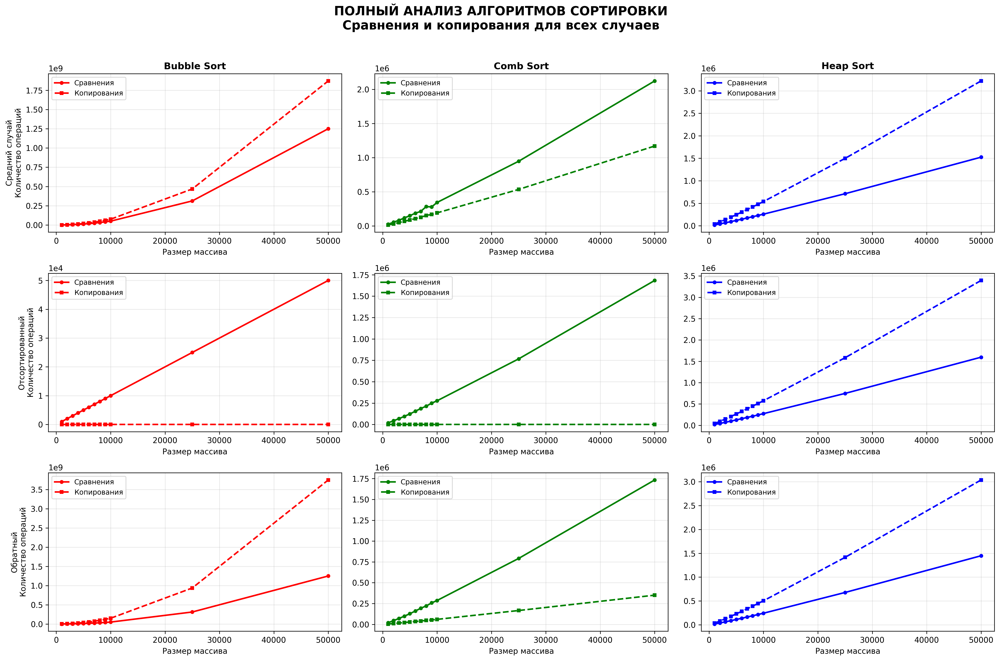

2. Сравнение с теоретическими оценками

Сравнение производительности Bubble Sort, Comb Sort и Heap Sort
• Размеры массивов: 1000, 2000, 3000, 4000, 5000, 6000, 7000, 8000, 9000, 10000, 25000, 50000 элементов
• Тестировались три случая: средний (случайный массив), уже отсортированный, обратно отсортированный
• Измерялись: количество сравнений и количество копирований элементов



Bubble Sort: Показывает квадратичную сложность O(n²). На отсортированных массивах работает быстро (O(n)), на обратно отсортированных - очень медленно.
Comb Sort: Значительно быстрее Bubble Sort благодаря использованию уменьшающегося интервала. Приближается к O(n log n) в среднем случае.
Heap Sort: Имеет стабильную сложность O(n log n) для всех случаев. Наибольшая эффективность на больших массивах.
Общий вывод: Для небольших массивов можно использовать Bubble Sort, для средних - Comb Sort, для больших данных лучше всего подходит Heap Sort.